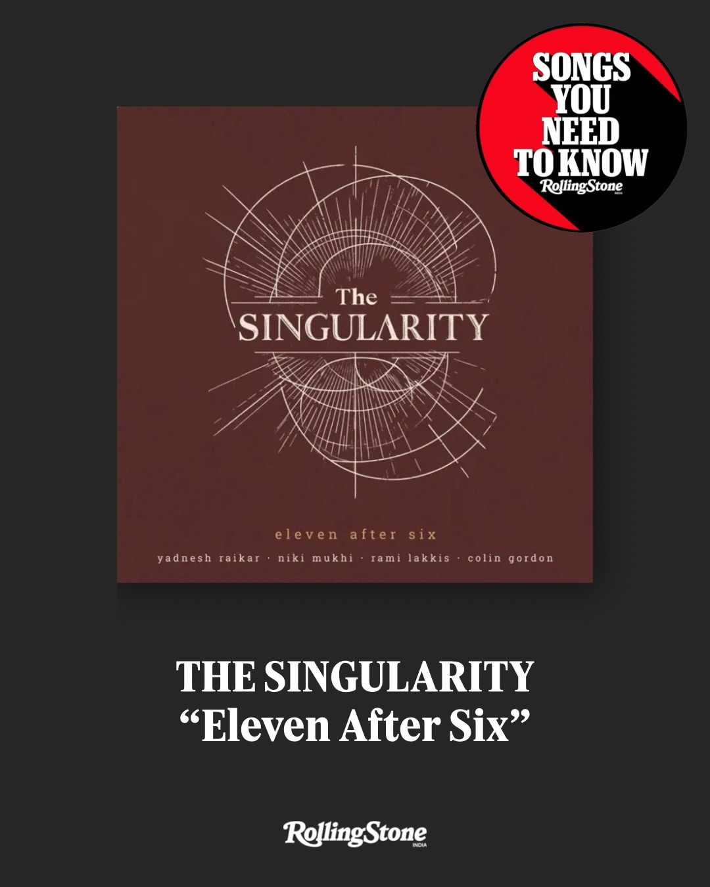
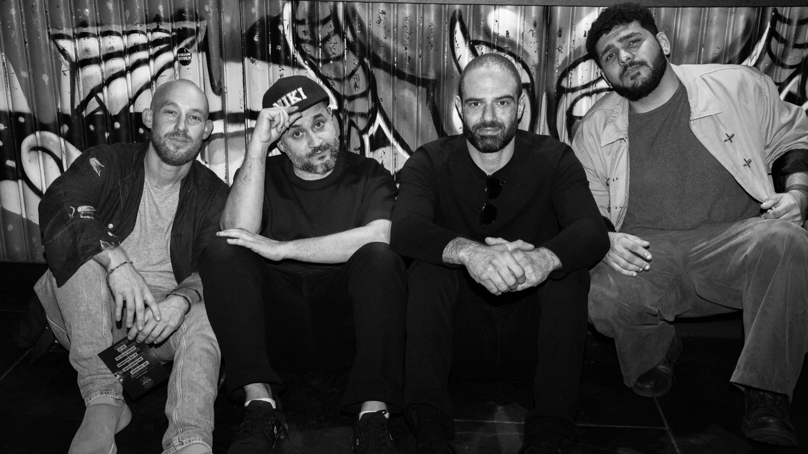
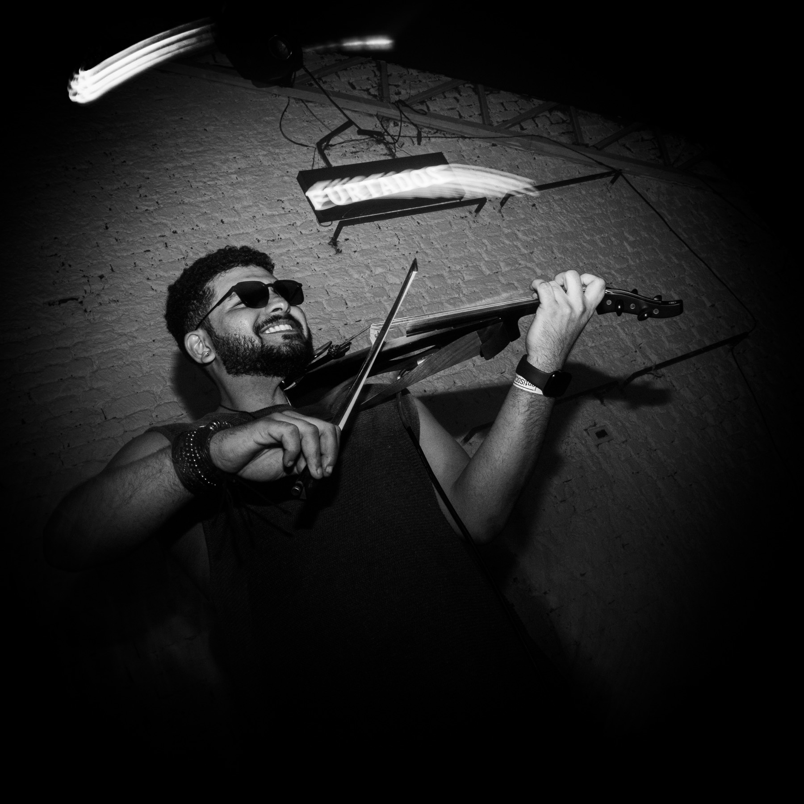
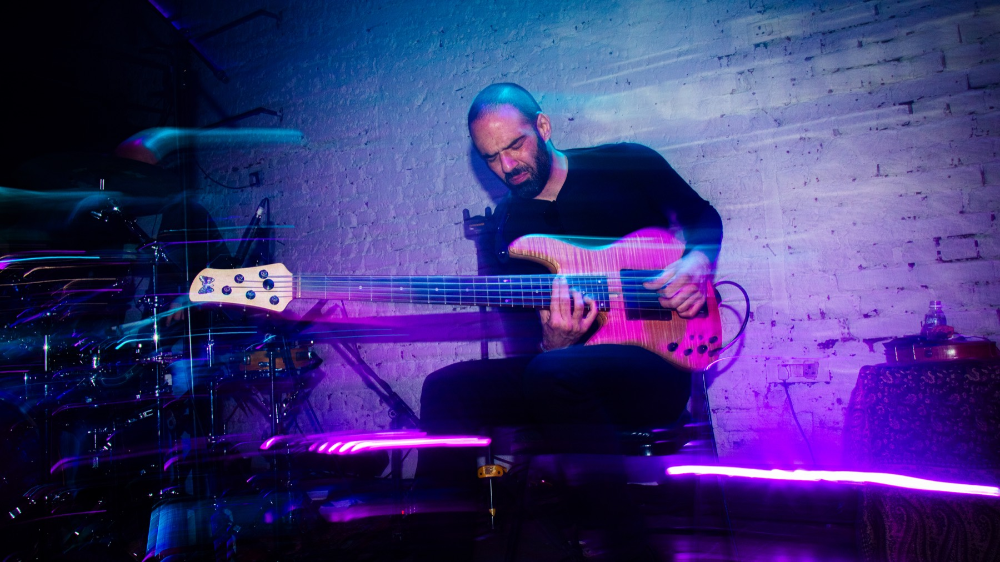
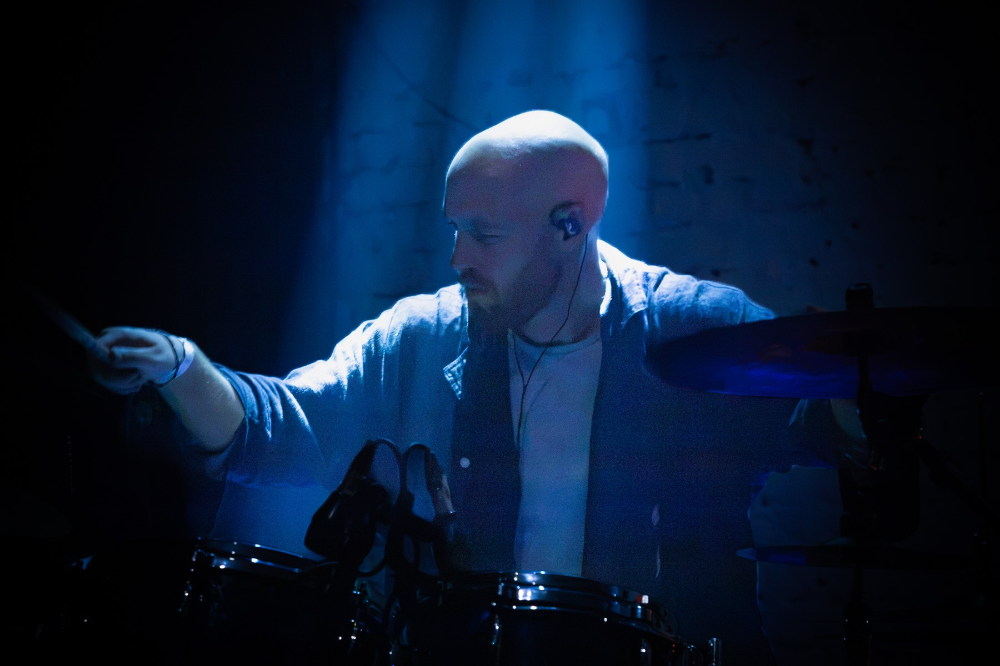
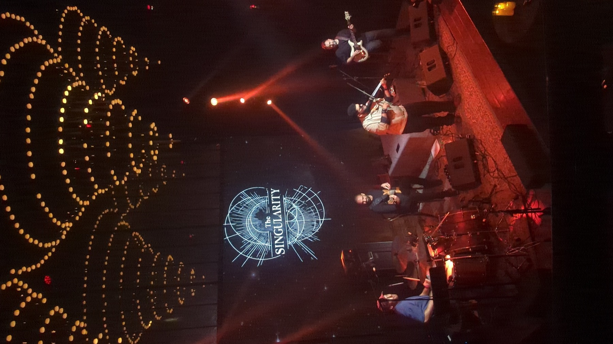
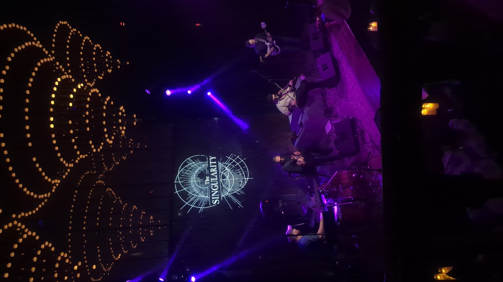
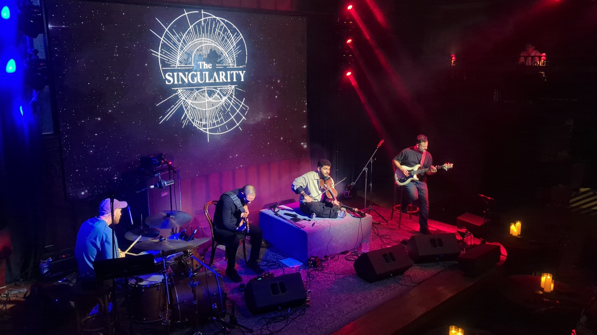

01 About
A classical violin virtuoso, plugged into a Marshall Superlead and turned up to eleven.
The Singularity is a high-energy fusion band building a bridge between power metal and Indian classical music. Violin virtuoso Yadnesh Raikar and flamenco/metal guitarist Niki Mukhi front the band, with Rami Lakkis on bass and Colin Gordon on drums.
Their single Eleven After Six was named one of Rolling Stone India’s Songs You Need To Know. Live, they are loud, precise and impossible to look away from.

02 Press
“Songs You Need To Know”
Rolling Stone India — Eleven After Six
Yadnesh Raikar was also named to Rolling Stone’s Future of Music 25.
03 Watch
Videos play muted. Tap for sound.
Decaf — live at The Piano Man ↗ My People — live at The Piano Man ↗

04 The band

Award-winning Indian classical and world music violinist, performing since age four. Named to Rolling Stone’s Future of Music 25, has given masterclasses at Berklee, and tours year-round.
Yamaha Violins artist @yadneshraikar_violinMulti-genre guitarist and composer. Has played Glastonbury, the Cologne Philharmonic and NMACC, recorded for BBC documentary scores, and performed with Joss Stone and Foreign Beggars.
PRS Guitars — Pulse Artist @nikimukhii
Composer and session bassist who has worked with Jorja Smith, Alex Machacek and Matthew Garrison. Former house band at Ronnie Scott’s; sessions at Abbey Road and Mark Ronson’s Tilyard Studio.
Fodera Basses artist @ramilakkisbass
Composer, producer and drummer from California. Studied ethnomusicology and jazz at UCLA under Kenny Burrell, James Newton and Clayton Cameron. Universal Music producer; 10+ years touring worldwide.
Canopus Drums artist @yayitscolin05 Live in Delhi


